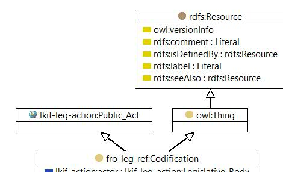

-

Jurgen Ziemer

|
| Jurgen Ziemer |
|
| Jayzed Data Models Inc. |
|
| owl:Class |
|
| An instances of this class of this class is the release of US Code. The Office of the Law Revision Council is the actor. The medium is the fro-uslo:UnitedStatesCode a LKIF Statute. |
|
| Codification |
|
| owl:Thing |
| lkif-action:actor only lkif-leg-action:Legislative_Body |
|
| http://www.estrellaproject.org/lkif-core/legal-action.owl#Public_Act |
|
| Positive law codification by the Office of the Law Revision Counsel is the process of preparing and enacting a codification bill to restate existing law as a positive law title of the United States Code. The restatement conforms to the policy, intent, and purpose of Congress in the original enactments, but the organizational structure of the law is improved, obsolete provisions are eliminated, ambiguous provisions are clarified, inconsistent provisions are resolved, and technical errors are corrected. |
| Instances | |
|---|---|
| fro-leg-ref:Public Law 114-156 , fro-leg-ref:Public Law 114-183 | |
© 2016 Jayzed Data Models Inc. generated with TopBraid Composer back to Financial Regulation Ontology or documentation index